AI Engineer | Agentic AI · LLM Systems · Cloud Deployment
Sarika's Assistant — a RAG Chatbot
Ask a question or choose a prompt.
About
Building real-world AI systems — from research prototypes to deployed automation.
I build practical AI and machine learning systems that move from idea to real deployment. My work combines intelligent automation, data engineering, and cloud-ready applications. I enjoy turning complex problems into structured solutions through experimentation and clean design. IEEE-published researcher. Hackathon winner. Driven by curiosity and research, I focus on creating AI tools that are reliable, useful, and built to last.
Experience
Work timeline
Oct 2025 - Present
AI Engineer
- Built and shipped Linkyro, a solo-built AI-powered Chrome extension (live on Chrome Web Store) that generates context-aware comments using LLMs — owned the full product lifecycle from problem discovery to deployment.
- Built and deployed agentic AI systems — voice scheduling agents using Retell AI + LLM orchestration with n8n — handling real-time conversations, structured outputs, and Google Calendar integration.
- Owned AI product development end-to-end: problem framing, AI pipeline design, model integration, production deployment, and iteration based on real user feedback.
- Designed AI evaluation pipelines including error analysis, failure-case reduction, and performance benchmarking to continuously improve product quality and reliability.
- Led rapid prototyping cycles, translating ambiguous founder ideas into shipped, scalable AI features.
Mar 2025 - Sep 2025
Software Engineer (Cloud & AI Infrastructure)
- Designed and deployed production backend services on Azure Linux VMs with focus on scalability, latency optimization, and failure recovery.
- Improved development velocity by ~40% through AI-assisted workflows while maintaining manual code review, testing, and performance standards.
- Standardized deployment practices (environment config, logging/monitoring, rollback-friendly releases) to reduce operational issues at scale.
Jul 2025 - Sep 2025
AI & ML Intern
- Developed production-grade computer vision systems for defense platforms — real-time object detection with robustness under adverse conditions.
- Optimized deep learning models (YOLOv8) on custom-annotated datasets for high-accuracy, low-latency inference in safety-critical environments.
Apr 2025 - Sep 2025
Project Intern
Institute of Electrical and Electronics Engineers IAMPro'25
- Developed an object identification and classification system for crime scene imagery as part of IEEE IAMPro'25 project work.
Achievements & Leadership
Recognition
Hackathon Wins
2nd Place — Databricks Hackathon. 1st Place — HackMarch 2.0. Builder mentality validated in competitive, time-constrained environments.
IEEE First-Author Publication
Peer-reviewed paper on applied object detection for autonomous systems at an IEEE International Conference.
Chair, IEEE CIS SVIT
Led ML workshops, hackathons, and mentored peers on applied ML pipelines and experimentation.
Academic Excellence
CGPA 9.1 — Ranked 2nd in department (Sem 6, 2024–2025).
Selected Projects
Projects
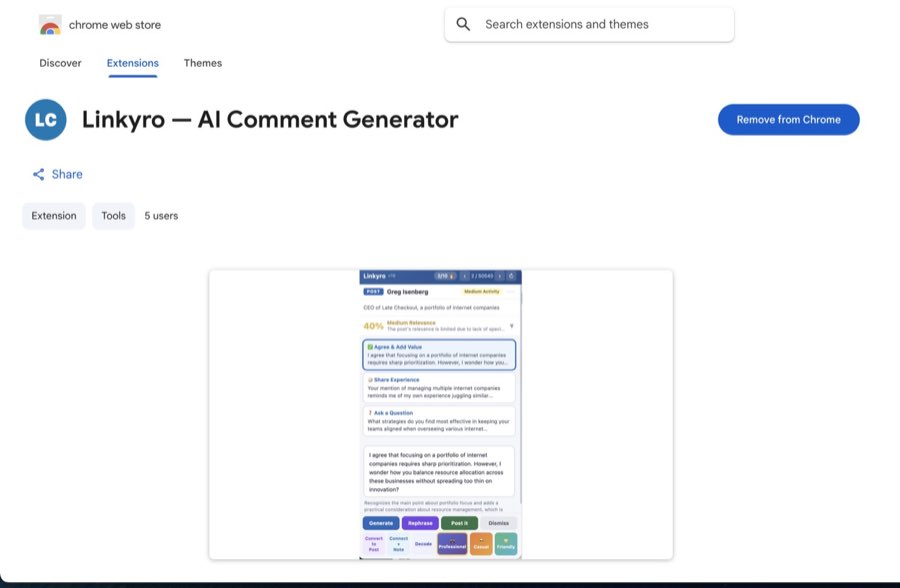
Linkyro — AI Comment Generator
Solo-built, live AI-powered Chrome extension that generates context-aware comments using LLMs. Owned the entire product lifecycle: problem discovery, prompt engineering, UI/UX design, browser extension architecture, and Chrome Web Store deployment.
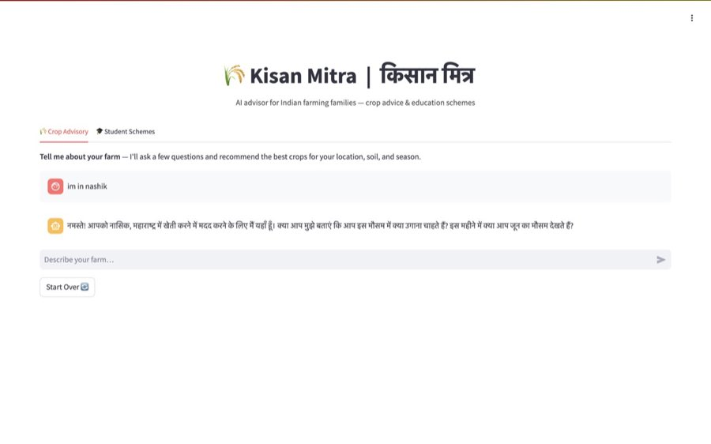
Kisan Mitra — Dual-Purpose AI Assistant
Chat-first AI product for farming families: crop advisory + scholarship discovery. Built with Databricks, matching pipeline on Delta tables with Spark SQL. End-to-end product: problem framing, data pipeline, LLM integration, and user-facing app.
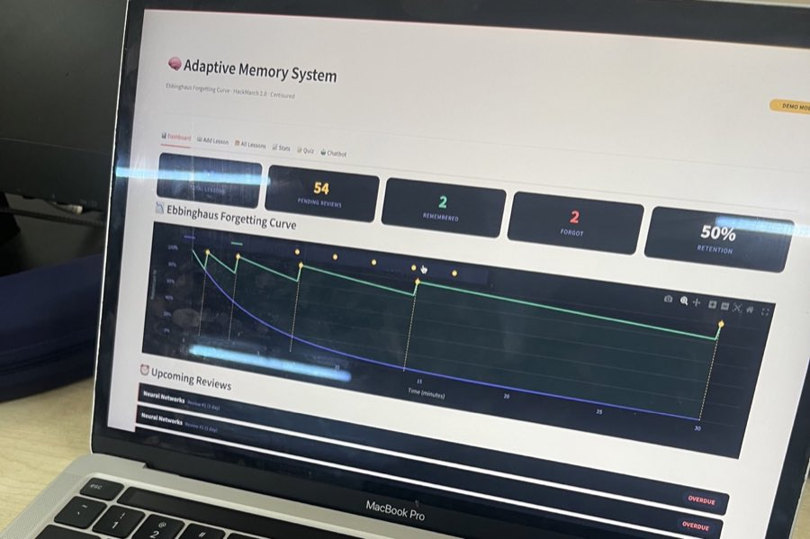
Ebbinghaus Adaptive Memory Agent
Spaced-repetition app with AI-driven adaptive scheduling. Full-stack: FastAPI + SQLite backend, Streamlit dashboard, n8n automation, Telegram integration, and AI quiz/chat for personalized review intervals.
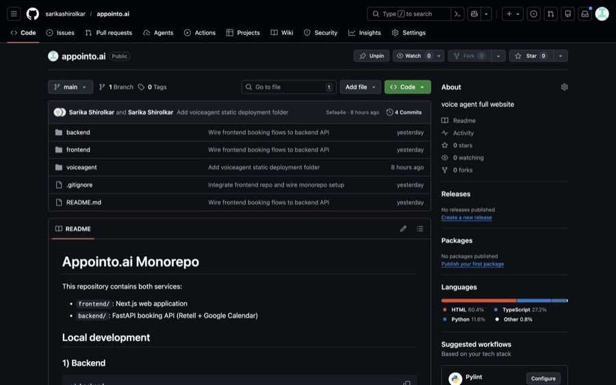
appointo.ai
End-to-end appointment platform for service businesses with booking, rescheduling, and cancellation workflows. Built to streamline customer scheduling and reduce manual coordination overhead.
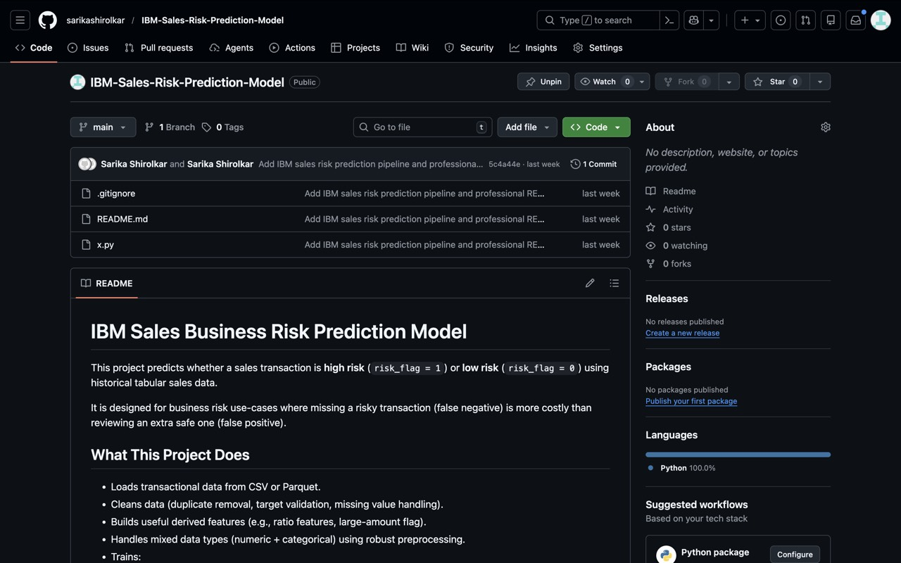
IBM-Sales-Risk-Prediction-Model
Machine learning pipeline for identifying high-risk sales outcomes from historical records. Includes preprocessing, feature selection, model training, and evaluation to support decision-making teams.
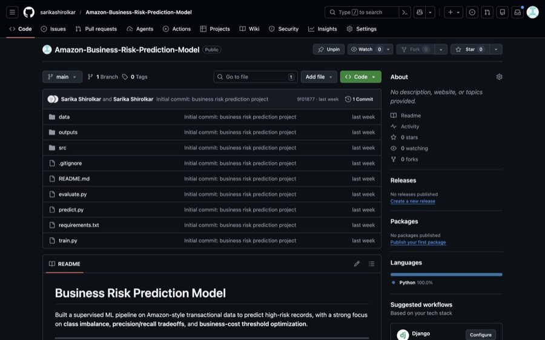
Amazon-Business-Risk-Prediction-Model
Business risk prediction system focused on transactional and operational signals. Implements threshold tuning and precision-recall analysis to improve actionable alerts for business stakeholders.
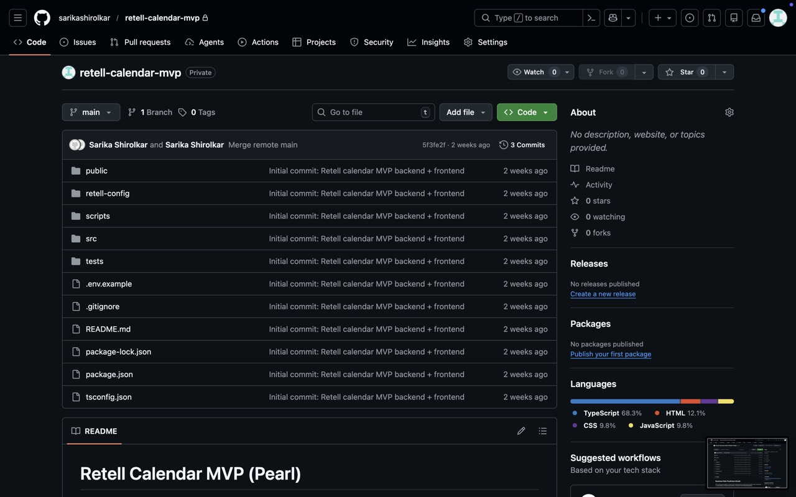
retell-calendar-mvp
Voice-agent MVP integrating Retell with calendar operations for automated call-based scheduling. Supports real-time availability checks and booking flow orchestration through API-driven logic.
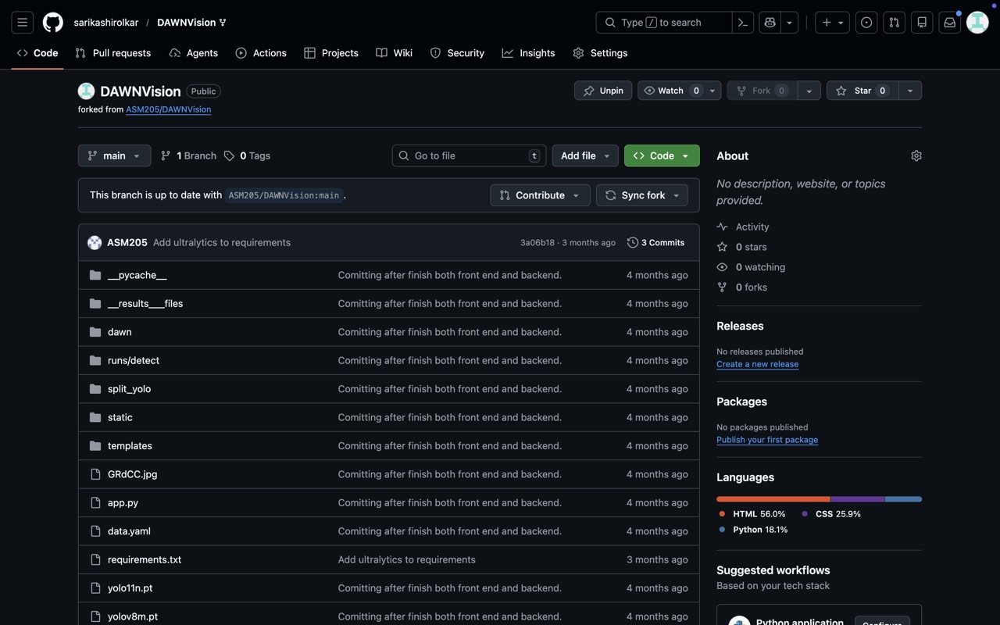
DAWNVision
Computer vision repository focused on object identification under practical constraints. Covers model experimentation, performance benchmarking, and robust evaluation across varying conditions.
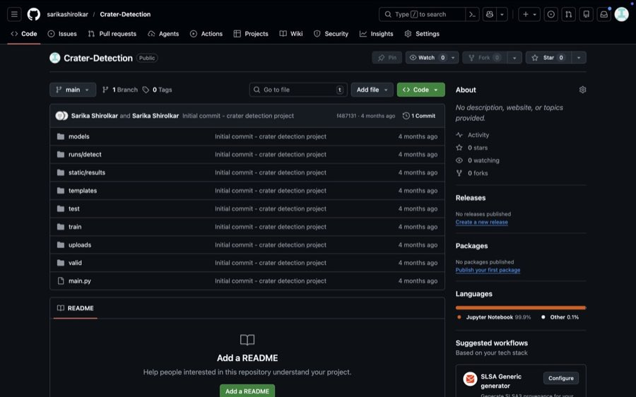
Crater-Detection
Detection pipeline for identifying lunar and Martian craters from image datasets. Combines image preprocessing and model inference with metric-based validation for detection quality.
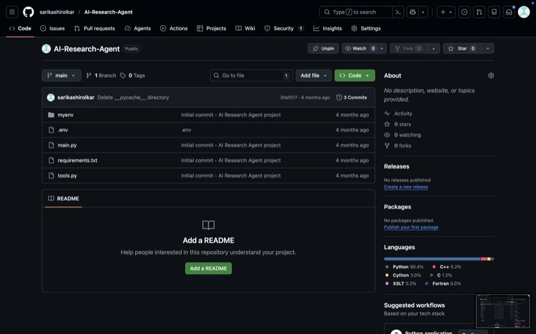
AI-Research-Agent
Agentic research assistant that gathers sources, summarizes findings, and structures outputs for faster technical research. Built with tool integration to reduce repetitive manual analysis steps.
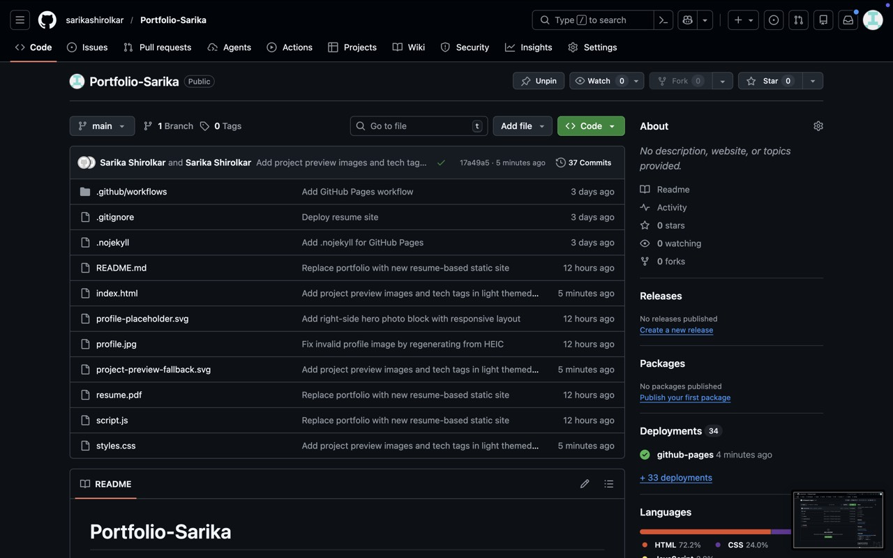
Portfolio-Sarika
Source code for this personal portfolio website with responsive layout, animated interactions, and GitHub Pages deployment. Showcases projects, experience, technical skills, and contact information.
Research
Published Paper
IEEE IAMPro'25
Secure Object Identification Techniques for Autonomous Vehicle
First Author — IEEE Conference Publication
Secure object identification is a cornerstone of safety-critical perception systems in Autonomous Vehicles (AVs), particularly when navigating unstructured environments. However, detection accuracy often degrades significantly under adverse weather conditions such as fog, rain, haze, and low light, posing severe risks to operational safety. This paper investigates these challenges and proposes a detection framework leveraging the YOLOv8 architecture to enhance visibility and classification reliability. The methodology utilizes the Dawn dataset, specifically curated for adverse weather scenarios, focusing on six high-priority classes: cars, buses, trucks, pedestrians, motorcycles, and bicycles. Through rigorous preprocessing, transfer learning, and a training regimen of 130 epochs, the proposed model demonstrates a superior trade-off between inference speed and detection accuracy compared to traditional multi-stage detectors. The results highlight the system's capability to mitigate false negatives in low-visibility frames, validating YOLOv8 as a viable solution for secure AV navigation. The paper concludes by outlining future research directions, including dataset expansion and multimodal sensor fusion, to further address class imbalances and environmental complexities.
Skills
Technical stack
Built for production-focused AI work: practical modeling, strong deployment basics, and reliable data workflows.
Languages
PythonSQLJavaC
AI/ML
LLMsTransformersClassificationFeature EngineeringModel EvaluationError AnalysisFine-tuningAI Evaluations
GenAI / LLM Tooling
LangChainn8n OrchestrationPrompt EngineeringStructured OutputsRAGTool-use Agents
Deep Learning & CV
CNNsYOLOv8TransformersOpenCVObject DetectionImage Classification
Libraries/Frameworks
scikit-learnTensorFlowKerasPandasNumPyFastAPIStreamlitBeautifulSoup
Cloud & Deployment
Microsoft AzureVMsApp ServicesBlob StorageLinuxDockerDatabricks
Data & Visualization
Data CleaningPreprocessingAnalyticsPower BITableau
Databases
MySQLMongoDBSQLiteSpark SQL
Tools
Docker ComposeGitVS CodeJupyterGoogle ColabChrome Extension Dev
Operating Systems
WindowsLinuxmacOS
Contact
Let us build something useful
Open to software engineering roles and collaborative AI product work.